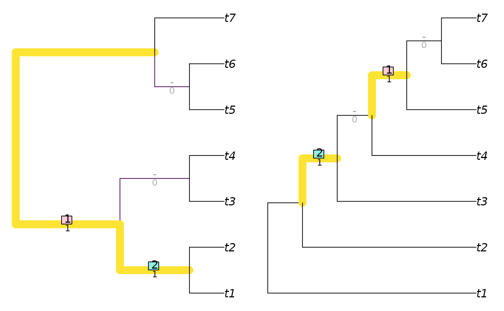
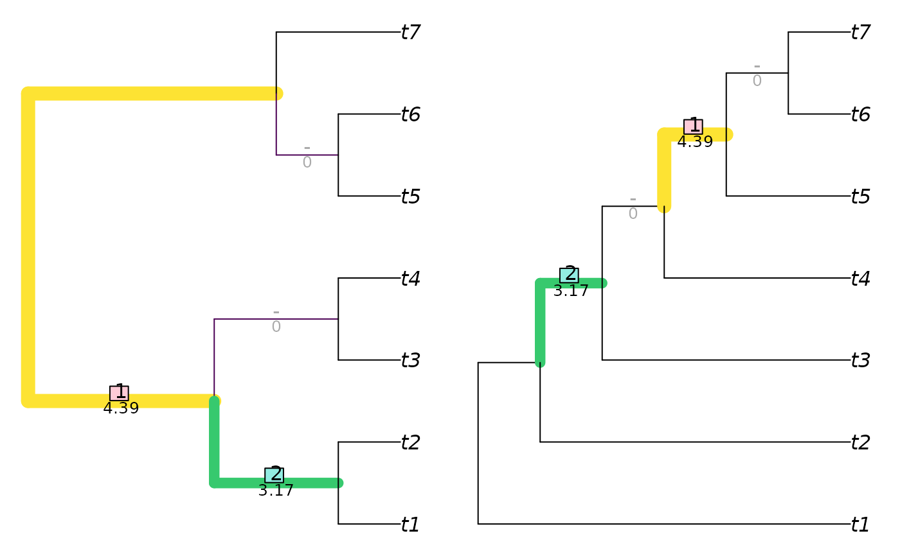

R/tree_distance_rf.R
Robinson-Foulds.RdCalculate the Robinson–Foulds distance
(Robinson and Foulds 1981)
, or
the equivalent similarity measure, with options to
(i) annotate matched splits;
(ii) weight splits according to their phylogenetic information content
(Smith 2020)
.
Whilst slower to calculate, information theoretic modifications of the
Robinson–Foulds distance (see TreeDistance())
are better suited to most use cases
(Smith 2020, 2022)
.
InfoRobinsonFoulds(
tree1,
tree2 = NULL,
similarity = FALSE,
normalize = FALSE,
reportMatching = FALSE
)
InfoRobinsonFouldsSplits(
splits1,
splits2,
nTip = attr(splits1, "nTip"),
reportMatching = FALSE
)
RobinsonFoulds(
tree1,
tree2 = NULL,
similarity = FALSE,
normalize = FALSE,
reportMatching = FALSE
)
RobinsonFouldsMatching(
tree1,
tree2,
similarity = FALSE,
normalize = FALSE,
...
)
RobinsonFouldsSplits(
splits1,
splits2,
nTip = attr(splits1, "nTip"),
reportMatching = FALSE
)Trees of class phylo, with leaves labelled identically,
or lists of such trees to undergo pairwise comparison. Where implemented,
tree2 = NULL will compute distances between each pair of trees in the list
tree1 using a fast algorithm based on Day (1985).
Logical specifying whether to report the result as a tree similarity, rather than a difference.
If a numeric value is provided, this will be used as a
maximum value against which to rescale results.
If TRUE, results will be rescaled against a maximum value calculated from
the specified tree sizes and topology, as specified in the "Normalization"
section below.
If FALSE, results will not be rescaled.
Logical specifying whether to return the clade matchings as an attribute of the score.
Logical matrices where each row corresponds to a leaf,
either listed in the same order or bearing identical names (in any sequence),
and each column corresponds to a split, such that each leaf is identified as
a member of the ingroup (TRUE) or outgroup (FALSE) of the respective
split.
(Optional) Integer specifying the number of leaves in each split.
Not used.
RobinsonFoulds() and InfoRobinsonFoulds() return an array of numerics providing the
distances between each pair of trees in tree1 and tree2,
or splits1 and splits2.
Note that if reportMatching = TRUE, the pairScores attribute returns
a logical matrix specifying whether each pair of splits is identical.
InfoRobinsonFoulds() calculates the tree similarity or distance by summing
the phylogenetic information content of all splits that are (or are not)
identical in both trees. Consequently, splits that are more likely
to be identical by chance alone make a smaller contribution to overall
tree distance, because their similarity is less remarkable.
Rapid comparison between multiple pairs of trees employs the Day (1985) linear-time algorithm.
RobinsonFouldsMatching(): Matched splits, intended for use with
VisualizeMatching().
RobinsonFoulds() is normalized against the total number of splits that
are present.
InfoRobinsonFoulds() is normalized against the sum of the phylogenetic
information of all splits in both trees, treated independently.
Day WHE (1985).
“Optimal algorithms for comparing trees with labeled leaves.”
Journal of Classification, 2(1), 7--28.
doi:10.1007/BF01908061
.
Robinson DF, Foulds LR (1981).
“Comparison of phylogenetic trees.”
Mathematical Biosciences, 53(1-2), 131--147.
doi:10.1016/0025-5564(81)90043-2
.
Smith MR (2020).
“Information theoretic Generalized Robinson-Foulds metrics for comparing phylogenetic trees.”
Bioinformatics, 36(20), 5007--5013.
doi:10.1093/bioinformatics/btaa614
.
Smith MR (2022).
“Robust analysis of phylogenetic tree space.”
Systematic Biology, 71(5), 1255--1270.
doi:10.1093/sysbio/syab100
.
Display paired splits: VisualizeMatching()
Other tree distances:
JaccardRobinsonFoulds(),
KendallColijn(),
MASTSize(),
MatchingSplitDistance(),
NNIDist(),
NyeSimilarity(),
PathDist(),
SPRDist(),
TreeDistance()
# For BalancedTree, PectinateTree, as.phylo:
library("TreeTools", quietly = TRUE)
balanced7 <- BalancedTree(7)
pectinate7 <- PectinateTree(7)
RobinsonFoulds(balanced7, pectinate7)
#> [1] 4
RobinsonFoulds(balanced7, pectinate7, normalize = TRUE)
#> [1] 0.5
VisualizeMatching(RobinsonFouldsMatching, balanced7, pectinate7)

InfoRobinsonFoulds(balanced7, pectinate7)
#> [1] 13.90209
VisualizeMatching(InfoRobinsonFoulds, balanced7, pectinate7)
